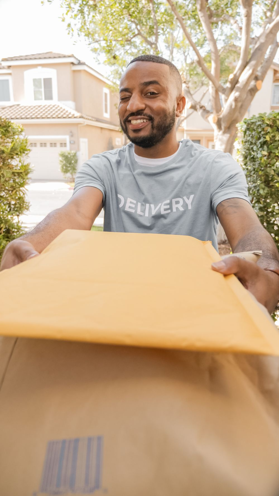

01 / DELIVERY
Final-mile parcel delivery
Multi-stop parcel routes connect delivery stations with homes and businesses. Careful loading, parcel handling and attention to delivery instructions shape each stop.
THE FINAL MILEWe are BESA Logistics, a UK final-mile delivery carrier based in Aylesford, Kent. As an independently owned Amazon Delivery Service Partner, we deliver parcels from the station to customers’ doors.
BESA is an equal opportunity employer. We welcome applicants from all backgrounds for our self-employed driving opportunities.

WHAT WE DO
Final-mile delivery is the last stage of a parcel’s journey. Our focus is the daily work that gets it from a local delivery station to the person waiting for it.
Multi-stop parcel routes connect delivery stations with homes and businesses. Careful loading, parcel handling and attention to delivery instructions shape each stop.
THE FINAL MILEDrivers are the face of every delivery. Clear onboarding, route communication and day-to-day coordination help them prepare for the road and look after customers.
PEOPLE FIRSTPeople, vans and schedules need to work together. We coordinate driver availability and vehicle allocation, with communication when a route needs attention.
DETAILS MATTERHOW DELIVERY WORKS
Delivery is more than driving between stops. Preparation, responsible decisions on the road and a respectful customer handover all matter.
Get to know BESACoordinate the day’s drivers and vehicles, organise parcels and review the route before departure.
Follow delivery instructions, handle parcels carefully and keep the operations team informed when plans change.
Deliver courteously, follow the required delivery confirmation process and flag any unsuccessful stops for follow-up.

ABOUT US
BESA Logistics Ltd is a UK final-mile carrier and an official Amazon Delivery Service Partner. We deliver parcels to Amazon customers as an independently owned and operated business.
BESA manages its own business and delivery team. Our participation in the Delivery Service Partner programme does not mean Amazon owns BESA.
WHERE WE OPERATE
Our operational base is Aylesford, Kent. From daily driver coordination to vehicle preparation, our team brings people and delivery operations together.
For delivery partnership enquiries or driving opportunities, speak to the BESA team. We’ll confirm the relevant route or starting location with you.
View Aylesford on a map
WHY BESA
We aim to deliver a reliable, professional service while building a business where people are supported to perform at their best. By investing in our team, our fleet and our operational systems, we create better outcomes for our customers, our drivers and the communities we serve.
At BESA Logistics, being customer obsessed means more than delivering parcels on time. It means understanding what matters to our customers, responding quickly when things change, and constantly looking for ways to improve the service we provide.
We use data every day to make better decisions. From delivery performance and safety trends to fleet reliability and operational quality, we use information to identify opportunities, solve problems early and continuously raise standards. Our approach is simple: measure what matters, learn from it, and act on it.
Our people are at the heart of our business. We believe that when our team feels supported, valued and equipped to succeed, our customers receive a better service.
We invest in training, coaching and development, and we work hard to create an environment where people can build confidence, improve their skills and progress. We also understand that looking after our team means listening, recognising good performance and being there when support is needed.
We want people who work with BESA to feel that they are part of a team, not simply another number.
LEARN. LISTEN. IMPROVE.
We believe strong operations come from combining experienced people with good data. Our managers use performance insights to coach teams, improve safety, reduce vehicle downtime and deliver a more consistent customer experience.
But data is only useful when it leads to action. That is why we combine performance information with regular communication and feedback from the people doing the job every day.
THE PEOPLE BEHIND THE PARCELS
Support, clear communication and teamwork, in our drivers’ own words.
“What I’ve liked most about working with BESA is the support. If you have a problem, there is always someone available to help, and good work is recognised.”
“BESA gives you clear expectations and the tools you need to do the job properly. The team is organised, professional and always looking at how things can be improved.”
“I’ve worked with different delivery companies, and BESA has been one of the best for communication and looking after its drivers. You feel like part of the team.”
CAREERS AT BESA
Join our team of self-employed delivery drivers in Aylesford, Kent. £140.40 per day plus VAT where applicable, new 2026 automatic vans at no cost to applicants, covered vehicle insurance and delivery fuel costs, paid training and free accountancy benefits.
Already invited? Use the private onboarding link sent to you by BESA. Do not share identity documents through a general website enquiry.
GET IN TOUCH
Whether you're exploring a working relationship or interested in a driving opportunity, we'd be glad to hear from you.
We'll add BESA's verified business email and phone number before launching this as the main company website.